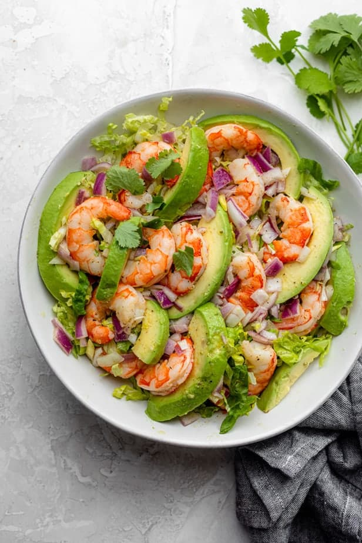

Shrimp Avocado Salad

Description
If you’re looking for a high protein, high fat type of salad that’s still loaded with lots of nutrition, I think you’re going to love this Shrimp Avocado Salad. I usually make this in the summer because it has really light and fresh flavors that’s perfect for a picnic or barbecue. But it works any time of the year, especially for those looking for keto or low-carb recipes.
Ingredients
- 1 lb. shrimp thawed drained and patted dry with paper towel
- 1 tablespoon olive oil
- 2 avocados peeled and sliced
- salt and pepper
- 1/4 red onion sliced
- 2 cups shredded lettuce
- 1 tablespoon fresh chopped cilantro
Dressing
- 3 tablespoons extra-virgin olive oil
- 3 tablespoons fresh-squeezed lime juice
- 1 teaspoon cumin
- 1/4 teaspoon sea salt
- 1/4 teaspoon fresh cracked pepper
Instructions
- To steam the shrimp, bring a large pot of water to a boil. Add the thawed shrimp to a steamer basket or mesh strainer and steam for 5-6 minutes until they turn opaque and cooked through.
- To make the dressing, use a bowl large enough to hold all the ingredients. Whisk together the olive oil, lime juice, cumin, salt and pepper.
- Transfer the cooked shrimp on top of the dressing. Add the red onions and gently combine all the ingredients with the dressing in the bowl. Spoon mixture over the shredded lettuce and add the sliced avocados.
- Garnish with cilantro and serve at room temperature or chilled.
Notes
Storage: Store any leftovers in an airtight container. They will last about 2 days in the fridge. But it’s best to enjoy it within 24 hours since the avocados will slightly brown the next day.
Make Ahead Tip: You can make the dressing up to 2 weeks in advance and have it on hand ready to toss when you make the salad. You can also made pre-cooked shrimp and toss it in the salad instead of cooking it on your own.
Substitutes: For best results, follow the recipe as is. However if you’re not a fan of red onions, you can try green onions or skip them all together. Also, if you prefer not to use cumin in the dressing, try paprika or coriander.